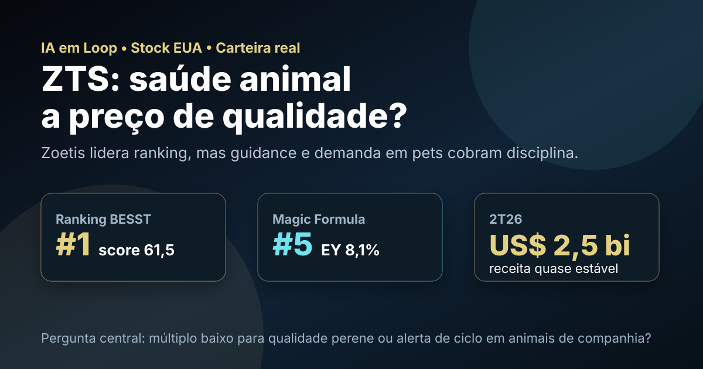

21/09: ZTS, Zoetis e a qualidade que precisa voltar a crescer
Zoetis lidera o ranking BESST & Buffett Dolarizado e também aparece bem na Magic Formula. A pergunta central é direta: o mercado está oferecendo uma empresa de saúde animal de qualidade a preço razoável, ou o desconto reflete uma desaceleração que ainda precisa ser provada como temporária?

Em saúde animal, qualidade não elimina ciclo: pets, dermatologia, parasiticidas, pecuária e competição precisam andar junto com preço pago.
Resposta curta: qualidade clara, mas o crescimento virou o teste principal
Na base local de fundamentos de stocks EUA com data-base de 06/09/2026, ZTS aparece com preço de US$ 75,81, valor de mercado de aproximadamente US$ 31,33 bilhões, P/L de 12,37, P/L projetado de 11,61, EV/EBITDA de 9,57, ROE de 64,91% e dividend yield de 2,80%.
Nos rankings públicos de setembro, Zoetis aparece em 1º lugar no BESST & Buffett Dolarizado, com score de 61,5, e em 5º lugar na Magic Formula Dolarizada, com earnings yield de 8,1%. A presença na carteira real BESST & Buffett Dolarizada vem de aportes verificados em julho e agosto de 2026, sem divulgar quantidades totais ou peso atual da posição.
O que os números recentes indicam
No 2º trimestre de 2026, Zoetis reportou receita de US$ 2,5 bilhões, praticamente estável contra o ano anterior, e lucro líquido de US$ 691 milhões, ou US$ 1,65 por ação diluída. Em base ajustada, o lucro líquido foi de US$ 781 milhões, com lucro ajustado de US$ 1,87 por ação.
O sinal negativo está no crescimento orgânico: a companhia informou queda de 1% na receita orgânica operacional e reduziu o guidance anual para US$ 9,120 bilhões a US$ 9,320 bilhões de receita, com crescimento orgânico operacional entre -3% e -1%. Também revisou o lucro ajustado por ação para US$ 6,15 a US$ 6,25.
| Métrica | Fonte/período | Valor | Leitura |
|---|---|---|---|
| Receita | 2T26 | US$ 2,5 bi | estável, sem aceleração |
| Lucro líquido | 2T26 | US$ 691 mi | margem ainda relevante |
| Lucro ajustado por ação | 2T26 | US$ 1,87 | qualidade de lucro ainda visível |
| Receita EUA | 2T26 | -7% | pressão em animais de companhia |
| Receita internacional | 2T26 | +8% reportado | diversificação ajuda |
| Guidance de receita 2026 | empresa | US$ 9,120 bi a US$ 9,320 bi | expectativa revisada para baixo |
Por que Zoetis importa para a carteira dolarizada
Zoetis é uma tese diferente das megacaps de tecnologia: vende medicamentos, vacinas, diagnósticos e soluções para animais de companhia e pecuária. A lógica de longo prazo é atraente porque envolve cuidado recorrente, marcas fortes, escala global, relação com veterinários e exposição ao gasto estrutural com pets e proteína animal.
O problema é que a recorrência não impede pressão de curto prazo. A própria empresa apontou menor demanda em animais de companhia nos EUA, sensibilidade de preço dos tutores, maior competição em categorias-chave, pressão na franquia de dermatologia e em Simparica Trio, além de genéricos afetando marcas como Cerenia e Convenia. O segmento internacional e pecuária compensaram parte do impacto, mas não o suficiente para manter o guidance anterior.
ZTS parece uma boa candidata de qualidade a preço mais razoável, mas não deve ser tratada como tese automática só porque lidera o ranking. A tese melhora se animais de companhia estabilizarem, pecuária seguir forte, pipeline virar novos produtos e o guidance voltar a crescer. A tese piora se competição, genéricos e sensibilidade de preço reduzirem margem e crescimento por mais tempo.
O que favorece e o que ameaça a tese
Favoráveis
• Liderança global em saúde animal.
• #1 no BESST & Buffett Dolarizado de setembro.
• ROE elevado e múltiplos moderados para uma empresa de qualidade.
• Diversificação entre pets, pecuária, EUA e internacional.
• Pipeline e aquisições podem recompor crescimento.
Desfavoráveis
• Receita orgânica operacional em queda no 2T26.
• Guidance anual revisado para crescimento orgânico negativo.
• Pressão em animais de companhia nos EUA.
• Competição em categorias-chave e genéricos em marcas relevantes.
• Se o lucro atual for pico, o P/L pode enganar.
Checklist para acompanhar daqui em diante
| Ponto | O que monitorar | Se piorar |
|---|---|---|
| Animais de companhia | visitas a clínicas, demanda e preço | crescimento estrutural fica em dúvida |
| Franquias-chave | dermatologia, Simparica Trio, Cerenia e Convenia | competição reduz margem |
| Pecuária | cattle, poultry e vacinas | compensação do ciclo pet diminui |
| Guidance | receita, lucro ajustado e crescimento orgânico | ranking pode estar atrasado |
| Valuation | P/L, EV/EBITDA e geração de caixa | múltiplo baixo vira armadilha |
Conclusão
A resposta para a pergunta do post é equilibrada: Zoetis tem qualidade suficiente para merecer lugar na carteira real e no topo dos rankings, mas precisa mostrar que a desaceleração é cíclica, não estrutural. O preço parece menos exigente que o de muitas empresas de qualidade, porém o mercado está cobrando evidência de retomada.
Na régua do IA em Loop, ZTS é uma tese de qualidade defensiva com alerta operacional: interessante quando liderança, marca, pipeline e rentabilidade caminham juntos; perigosa quando o investidor olha apenas P/L e ranking sem cobrar recuperação de receita orgânica.